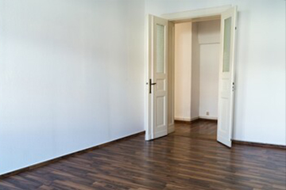
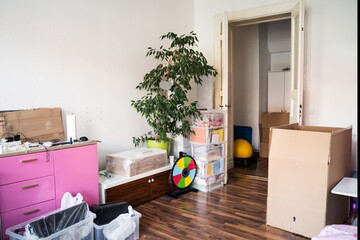
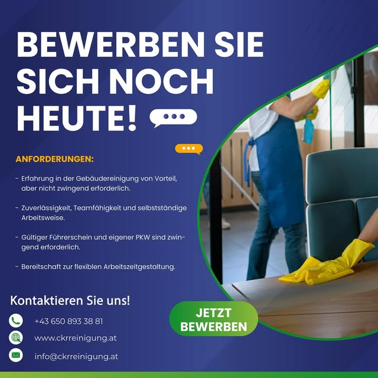

Bina & düzenli bakım
Düzgün yapıldığı sürece kimsenin fark etmediği düzenli temizlik.
- Düzenli bakım temizliği
- Merdiven temizliği
- Derin temizlik
- Genel mekân bakımı
- Ofis ve ev temizliği
Kufstein'da bina temizliği 2011'den beri
Merdivenden tramvaya kadar. Kufstein ve tüm Tirol'de temizlik yapıyoruz — günün her saati ulaşılabilir, kısa vadeli işler de dahil.
Son dördünü çok az firma yapar. Biz yapıyoruz.
On altı hizmet, dört alan. Konuyu bize anlatın — yerinde bakıp teklif verelim.
Düzgün yapıldığı sürece kimsenin fark etmediği düzenli temizlik.
Dışarıdan görünen her şey — ve yukarı çıkmayı gerektiren her şey.
Bir sonraki misafire kadar hazır olması gereken odalar.
Ustalar gittikten sonra, teslim edilmeden önce.
Çatıdan bodruma
Binanın üzerine gelin — ya da dokunun. Her nokta, orada gereken hizmete götürür.
Nasıl ilerliyoruz
Telefonda tahmin yürütmüyoruz. Gelip yerinde bakıyoruz, gerçekten ne yapılması gerektiğini görüyoruz ve ondan sonra değişmeyecek bir fiyat veriyoruz.
Telefon, form ya da WhatsApp — birkaç cümle yeter. Size dönüş yapıp bir randevu ayarlıyoruz.
Ücretsiz ve hiçbir bağlayıcılığı yok. Kapsamı, girişi ve zaman aralığını netleştiriyoruz — gereksiz bir şey varsa açıkça söylüyoruz.
Sonradan büyüyen bir tahmin değil, sabit bir fiyat alıyorsunuz. Düzenli temizlikte ayrıca haftalık düzeninize uyan bir plan.
Eğitimli saha şefleri ekibi yönlendiriyor ve işi düzenli olarak kontrol ediyor. Bir şey ters giderse bir sonraki firmaya değil, bize söyleyin.
CKR standardı
Her işte geçerli olan altı şey — sadece konuşulan işte değil.
Önce / Sonra
Kufstein'da bir ev boşaltma işi. Solda keşif anındaki hâli, sağda teslim — süpürülmüş. Ayracı sürükleyin.


Toplu taşıma temizliği
Metro, tren, tramvay ve otobüsler vakit bulununca değil, tarifenin bıraktığı aralıkta temizlenir. Çalışma planımızı müşterimizin seferlerine göre kuruyoruz ki akış hiç aksamasın.

Tarihî yapı temizliği
Tarihî yüzeyler beton duvardan farklı bir yöntem ister: daha az basınç, başka malzeme, daha çok sabır. Anıtları ve koruma altındaki cepheleri temizliyoruz — ve neyin yapılabileceğini önceden söylüyoruz.
AyrıntılarDaire, ev ve apart
Sıklığı, kapsamı ve yoğunluğu birlikte belirliyoruz. Ekip esnek çalışıyor, böylece haftalık programınıza oturuyor — rahatsız edilmiyorsunuz.
Oturulan daireler ve evler için.
Her hafta aynı gün, aynı ekip. Hiçbir şey birikmiyor ve siz hiç düşünmek zorunda kalmıyorsunuz.
En çok tercih edilen sıklık.
Çoğu ev ve daha sakin dolulukta çalışan tatil daireleri için yeterli. Aradaki küçük işleri siz hallediyorsunuz.
Taşınma sonrası, teslimden önce, tadilattan sonra.
Düzenli yerine bir kez derinlemesine — düzenli hizmet başlamadan önce ilk kapsamlı temizlik olarak da.
Ek olarak talep edilebilir: Eşyalar ve ev aletleri — koltuktan radyatöre, buzdolabından ocağa.
Fiyatı keşiften sonra söylüyoruz — ücretsiz ve bağlayıcılığı yok. Keşif randevusu alın
24 saat
Şu an ulaşılabilir
Haftanın yedi günü ulaşılabilir. Su baskını ve acil durumlarda da.
2011'den beri
Kufstein merkezli, on yılı aşkın süredir aynı firma.
5,0
Google ve herold.at'teki dokuz değerlendirmeden.
„Çok güvenilir ve güler yüzlü. Her an ulaşılabilir, kısa vadeli işler de yapılabiliyor. Çok iyi iş!"
Hizmet bölgesi
Merkezimiz Kufstein. Unterland bölgesinde düzenli olarak yoldayız, büyük işler için daha uzağa da gidiyoruz.
Inntal — flussabwärts von West nach Ost
Kufstein — merkezimiz. Weckaufstraße 10.
Yeriniz listede yok mu? Talep üzerine tüm Tirol'e gidiyoruz — arayın yeter: +43 650 893 38 81.
Sık sorulanlar
Bu yere göre değişir ve telefonda tahmin yürütmek kimseye fayda sağlamaz. Gelip bakıyoruz — ücretsiz ve bağlayıcılığı olmadan — ardından sabit bir fiyat veriyoruz.
Evet. Haftanın yedi günü, gece gündüz ulaşılabiliyoruz; su baskını ve acil durumlarda da. Arayın, neyin mümkün olduğunu hemen söyleyelim.
Evet. Özellikle ofis, otel ve toplu taşımada temizlik kimseyi rahatsız etmeyeceği saatlere denk gelir — çalışma saatleri dışına.
Ekolojik ürünler; ayrıca her yönteme uygun modern makine ve ekipmanlar. Hassas yüzeylerde — örneğin tarihi cephelerde — yöntem önceden kararlaştırılır.
Boşaltma veya tahliye sonrası yeri boş ve süpürülmüş teslim ediyoruz: eşya yok, kaba kir yok. Daha fazlası isteniyorsa söylemeniz yeterli.
Sürekli kadro; sürekli değişen geçici eleman değil. Ekibimiz temizlik sırasında kişisel eşyalarınıza temas ettiği için personel seçiminde sorumluluk bilinci, gizlilik ve güvenilirlik esastır. Eğitimli saha şefleri yönlendirir ve düzenli olarak denetler.
Evet — daireler, evler ve tatil apartları; tek seferlik ya da düzenli. Kapsam yukarıda sıklıkların yanında yazıyor.
Evet. Kaba inşaat ve son inşaat temizliğini, diğer ekiplerin takvimini aksatmadan işleyen sürecin arasına yerleştiriyoruz.
CKR'de çalışmak
Bina temizliğinde çıraklık eğitimi veriyoruz — bu işi yıllardır yapan insanlarla. Deneyiminiz olmasa da olur: bize ulaşın, size ne uyuyor birlikte bakalım.
İşimizden
Teklif alın
Bilgi ne kadar net olursa teklif de o kadar net olur. Acele ediyorsanız doğrudan arayın — günün her saati ulaşılabiliriz.
Gece gündüz ulaşılabilir
Keşif ücretsizdir ve hiçbir yükümlülük getirmez. Fiyatı ancak ondan sonra söyleriz — ve o fiyat değişmez.